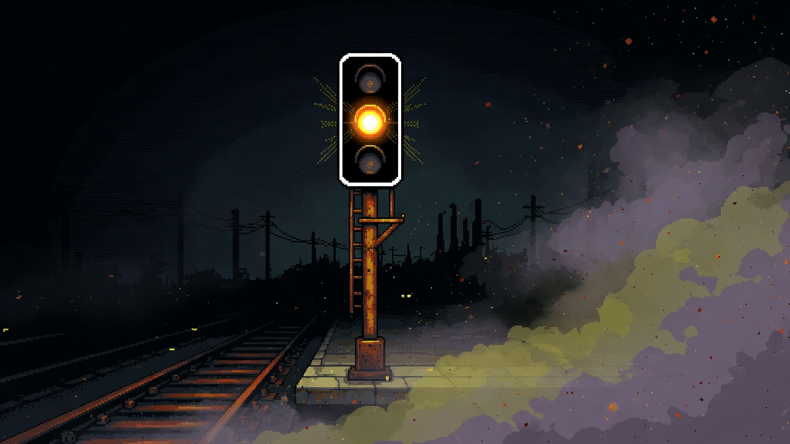
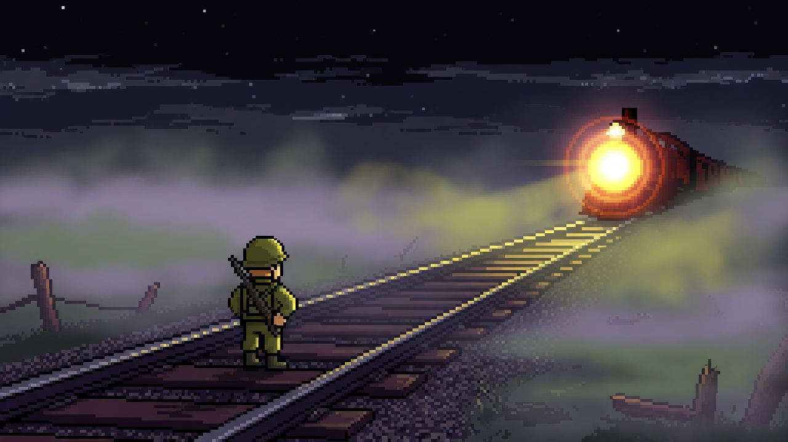

이 문서는 흩어져 있던 세계관·플로우·UI 콘셉트·런칭 문서를 하나로 묶은 통합본 v3다. v2 대비 캐릭터가 선도부로 리뉴얼됐고, 캐릭터 선택이 제거됐으며, 출근 용어가 근무로 바뀌었다. 글로만 설명하지 않는다. 지금 있는 화면과 시안으로 읽는다. 가로 모바일 16:9가 유일한 플레이 비율이다.
- 세계관 — 게임 규칙과 세계는 같다
- 한 화면으로 보는 게임
- 화면 흐름 — 플레이를 앞당긴다
- 한 판
- 누가 막나
- 전투 HUD — 채택안 9
- 비품실 — 성장 3축
- 런 밖 — 내일 오게 하는 것
- 아트 — 선도부 리뉴얼 확정
- 시작에 성공하는 법
- 하지 않는 것
1. 세계관 — 게임 규칙과 세계는 같다
이세계 열차 vs 선도부. 시간표와 무관하게 학생을 들이받는 열차가 등장한다. 정체를 밝힐 수 없는 이 열차를, 유일하게 서 있는 선도부가 막는다.
- 적 — 이세계 개체(좀비). 열차가 내리는 존재다. 몹만이 아니라 열차 자체가 적이다.
- 아군 — 플레이어는 선도부장(갈색 교복, 노란 완장, 등에 체육판). 옆에서 쏘는 동료는 선도부 위원. 열차를 몸으로 막는 이는 체육부장이다.
- 원칙 — 주인공은 자리를 막는다. 이세계는 열차에서 이세계 개체로 온다. 들이받으면 게임오버다.
세계관을 화면에 설명하지 않는다. 도입 3초 안에 열차를 보여 주고, 게임오버에 「열차 파괴」를 보인다. 설정·스토리 텍스트는 화면에 올리지 않는다.
2. 한 화면으로 보는 게임
폰을 가로로 든다. 캐릭터는 왼쪽, 열차는 오른쪽. 화면을 두드리면 쏜다.

라이브 전투. 16:9, 왼쪽 선도부장 · 오른쪽 열차 · HUD는 모서리만.

타이틀. 근무 스트릭, 선도부장, 시작.

비품실. 막은 다음, 다음 열차 전에 산다.
3. 화면 흐름 — 플레이를 앞당긴다
재미는 연타·저지·콤보다. 플레이어가 어디서 막히는지 화면에 새긴다. 첫 판 안에 첫 클리어·첫 상점·다음 런이 이어지는 것이 핵심이다.
타이틀 → 튜토리얼(3초) → 클리어 1회 → 상점 → 다음 스테이지.
스플래시 → 타이틀 → 튜토리얼(첫 판) → 튜토리얼 없는 플레이 → 클리어 카드 → 비품실 → 스테이지 반복.
첫 진입과 재플레이 사이가 벽이다. 튜토리얼은 첫 판 한 번만. 재도전은 플레이 직행이다.
타이틀에서 탄창을 장전하듯 화면을 두드리면 전투로. HUD는 위치를 그대로 가져가서 눈을 옮기지 않는다.
체력 0이면 곧바로 열차 파괴. 0.8초 폭발로 「게임오버」가 올라온다.
정산 후 다음 열차까지 골드를 쓰는 유일한 시간. 모든 성장과 해금은 여기서 이뤄진다.
「다시 시작」으로 즉시 재개, 0.6초 반응. 자리에서 다시 막는다.

스플래시 1.8초, 스킵 없음. 밤 선로에 로고를 겹친다.

인트로 3초. 자막: SPACE로 연타하라. 설명 화면을 따로 두지 않는다.
| 화면 | 필수 | 넣지 않을 것 |
|---|---|---|
| 스플래시 | 로고 1.8초 | 버튼, 시작 안내 |
| 타이틀 | 시작 / 기록 / 설정 | 큰 테스트 버튼, 히든 튜토리얼 |
| 플레이 HUD | 스테이지, HP, 거리, 골드, 탄약, 콤보 | 스토리 텍스트, 미니맵 |
| 클리어 카드 | 골드, 거리, 콤보 | 스테이지 진행도 미리보기 |
| 비품실 | 3축 + 재장전 | 가격 없는 아이템 슬롯 획득 연출 |
| 게임오버 | 파괴 연출, 최고 거리, 골드, 파괴 수 | 보상 대기 연출 |
4. 한 판
오늘 근무했는지, 시작을 누른다. 캐릭터 고르기는 없다 — 주인공은 선도부장 한 명이다.
1스테이지에 이세계 개체가 반드시 나온다. 광고에서 보여 준 것과 같아야 한다.
탭할 때마다 샷 소리와 진동. 열차가 몸에 닿으면 오버.
막으면 골드로 산다. 들이받으면 그 판은 끝. 스테이지는 무한히 이어진다.
5. 누가 막나

선도부장 — 플레이어. 갈색 교복, 노란 완장, 등에 체육판. 권총. 자리를 지킨다.

선도부 위원 — 상점 동료. 안경·완장. 옆에서 자동 사격.

캐릭터 교체 완료 — 학생회장·부회장 삭제, 선도부로 디자인 리뉴얼. 캐릭터 선택 UI도 제거했다.
체육부장은 상점에서 산다. 열차를 몸으로 1초 막는다. 리뉴얼 아트는 Elice 파이프라인(tools/elice_seondo_sprites.mjs → pack_seondo_art.py)으로 만들었다.
6. 전투 HUD — 채택안 9
일러스트 아이콘. 글자는 판 위에 HTML로 올린다.
사이드뷰 전투 시안. 라이브 HUD의 기준.
키트 시트. 하트·탄피·금화·장갑·열차.
7. 비품실 — 성장 3축
라이브 상점. 초록이 구매, 빨강이 광고·다음 열차.
비품실은 골드가 모이는 유일한 시간이다. 성장은 무기 / 동료 / 체육부장 3축 + 재장전으로 이루어지며, 각 축은 단계별로 이어진다. 아래는 라이브 구현 기준 가격이다.
| 축 | 단계 | 가격 | 하는 일 |
|---|---|---|---|
| 무기 | 라이플 | 90G | 클릭당 2발. 데미지·넉백 업 |
| 미니건 | 210G | 클릭당 3발, 장탄수 100. 재장전 3배 느림, 발당 데미지 절반 | |
| 터렛 | 240G | 4클릭당 1발, 고정 데미지 170, 넉백 6배. 연사 제한 없음 | |
| 스나이퍼 | 300G | 터렛 상위. 정밀 고정 데미지 | |
| 동료 | 선도부 위원 | 60G | 옆에서 0.5초마다 자동 사격 |
| 위원 업그레이드 | 60G | 공격속도 상승 (최속 70ms, 반복 구매) | |
| 드론 | 120G | 머리 위 호버링, 유도미사일. 넉백은 매그넘의 3배 | |
| 람보 | 270G (부활 90G) | M60 기관총, 동료 최속의 2배 연사. 좀비 3회 타격에 쓰러짐(체력바) | |
| 체육부장 | 체육부장 | 60G (재구매 30G) | 열차를 몸으로 저지. 저지 시 열차 감속 + 버팀 |
| 체육부장 강화 | 30G | 감속량 강화, 버팀 0.2초 증가 | |
| 전사 (최종) | 270G | 칼 스윙으로 개체 처치 + 매 스윙 열차 고정 50 데미지, 감속 0.04, 버팀 4초 | |
| 보조 | 재장전 강화 | 30G | 모든 무기의 재장전 속도 향상 (미니건은 별도 3단, 30G) |
| 광고 스텁 | — | +60G. 승패 스탯은 광고로 안 산다 |
8. 런 밖 — 내일 오게 하는 것
오늘 첫 런에서 근무를 찍는다. 이어지면 스트릭, 골드 보너스(스트릭×10G, 최대 50G). 타이틀에 줄로 보여 준다 — 「오늘 근무 · 스트릭 n일 · 내일도 근무」. 하이점수만으로는 내일 안 온다.
캐릭터 해금은 없다. 성장은 전부 비품실 3축(무기·동료·체육부장)으로 이루어진다.
저장은 localStorage — 최고 거리, 골드, 근무 스트릭, 화면 설정, 마지막 화면. 백엔드 없이 동작한다.
9. 아트 — 선도부 리뉴얼 확정
지금은 갈색 교복 선도부장 + 아이콘 HUD로 라이브다. 학생회장·부회장은 삭제했고, 캐릭터 선택 UI도 제거했다. 세계는 밤 남도 인도 시티 + 팬텀 열차, 선도부의 갈색·노랑이 포인트 컬러다. 선도부 전용 키트(완장·학생증·플랫 라인·경고장) 중 하나로 HUD를 맞추는 것은 다음 단계다.

선도부 시안 전투. 같은 가로 사이드뷰.

선도부 리뉴얼 키트 후보. 갈색·노랑·빨강 플랫 라인.
UI 콘셉트 후보는 총 18안이다 — 1~12는 공통 키트(글래스·티켓·네온·플랫·택티컬·골드·학생회·화려한 장식·일러스트 아이콘·리본·유화 엠블럼·스티커), 13~18은 선도부 전용(완장·학생증·플랫 라인·경고장·칠판·안경·문방구). 채택안은 9(일러스트 아이콘). 전체 보드는 UI 보드에서 본다.
10. 시작에 성공하는 법
웹 광고형이다. 설치 유도 광고와 첫 판이 다르면 바로 죽는다. 숫자 없이 유저를 사지 않는다.
크리에이티브에 넣는 것은 실제 1스테이지다. 선도부장이 왼쪽, 열차가 오른쪽, 개체가 내린다. 후반 스테이지 보스나 상점 풀세트를 광고에 넣지 않는다.
1스테이지 좀비는 필수다. 위협이 없으면 연타할 이유가 없다. 클리어는 짧게, 못 막으면 바로 오버가 보이게.
탭마다 샷과 진동. 무음이면 버튼 연타일 뿐이다. 사운드 켜진 상태에서 첫 판을 돌린다.
첫 클리어 뒤 타이틀에 「내일도 근무」가 보여야 한다. 하이점수 숫자만 있으면 D1이 안 나온다.
스팀 저가와 같이 가면 둘 다 약해진다. 페이지 링크 하나로 광고를 받는다.
설정에 이미 있다: 방문, 1스테이지 시작, 클리어율, D1. 1스테이지 클리어가 안 나오면 광고를 끄고 첫 판을 고친다. D1이 안 나오면 근무 보상을 고친다. 그 다음에만 예산을 넣는다.
소액·짧은 기간만 태운다. 크리에이티브는 라이브 화면을 캡처한다. 시안 일러스트로 광고하지 않는다.
캐릭터는 선도부로 교체됐다. 남은 것은 HUD를 선도부 전용 키트(13~16안) 중 하나로 맞추는 일이다. 다만 첫 성공 조건(클리어율·D1)을 먼저 본다. 숫자가 나온 뒤에 HUD를 바꾼다.
하지 않는 것
- 스팀과 웹을 동시에 밀기
- 광고로 무적·스테이지 스킵·승패 스탯 판매
- 주인공이 뛰어다니는 액션으로 장르 바꾸기
- 측정 전에 예산을 태우기
- 로고 없이 STOP THE TRAIN 타이틀을 크게 보여 주기
- 클리어 후 스테이지 진행도 예고로 다음을 예측하게 하기
- 인트로에서도 게임 규칙을 어기기
라이브 화면은 선도부 리뉴얼 빌드에서 찍었다(plan/shots 3종 교체 완료). 구 캐릭터(학생회장·부회장) 에셋은 train_stopper_assets/_backup_council에 보관한다. 가로 16:9가 유일한 플레이 비율이다. 이 문서가 기획·디자인의 단일 기준이다.